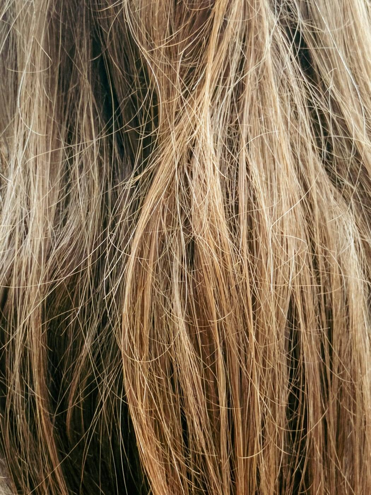
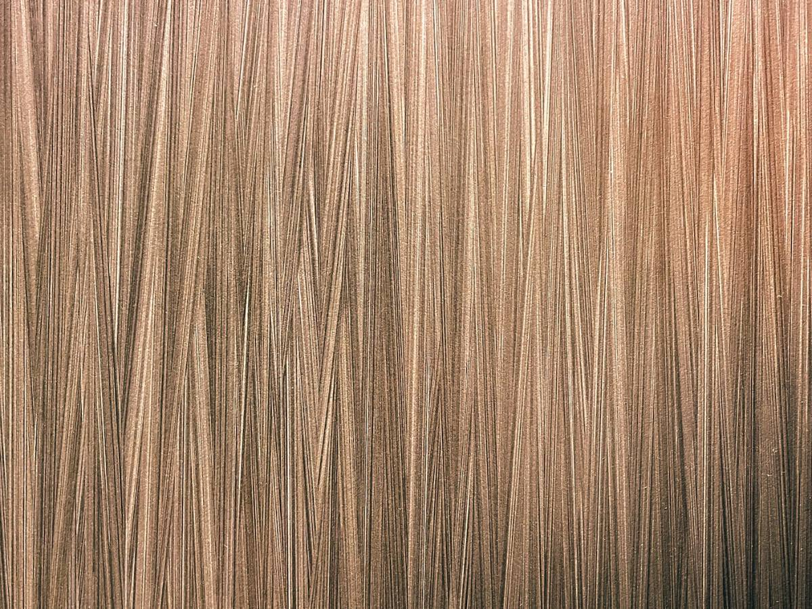
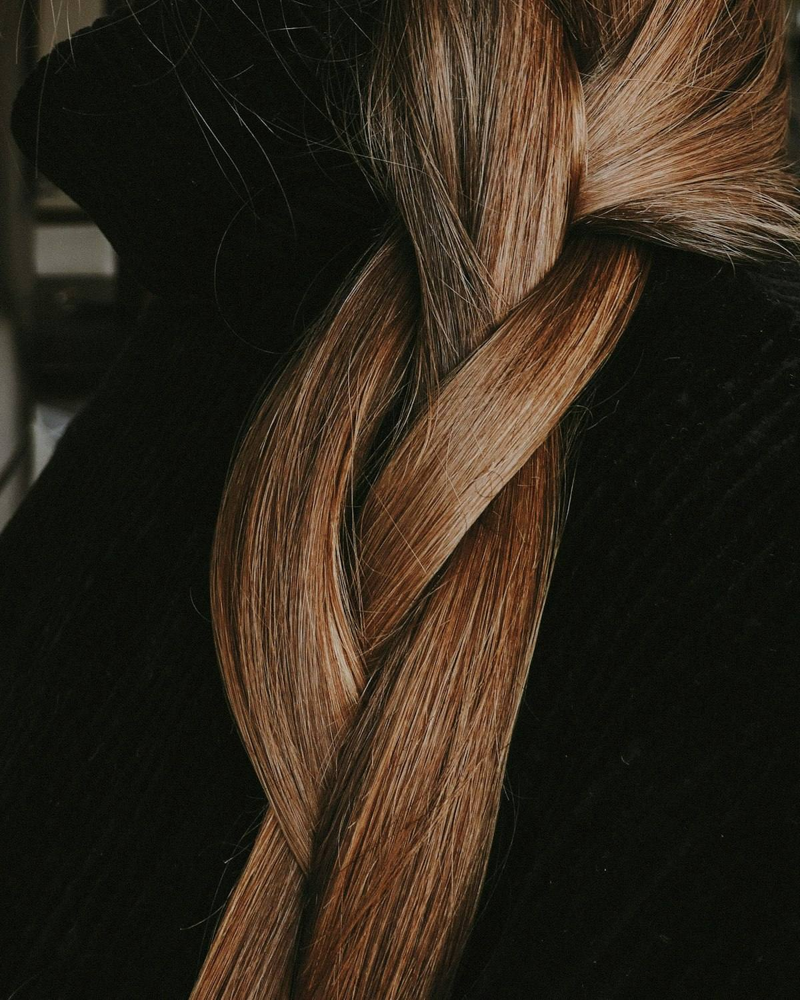
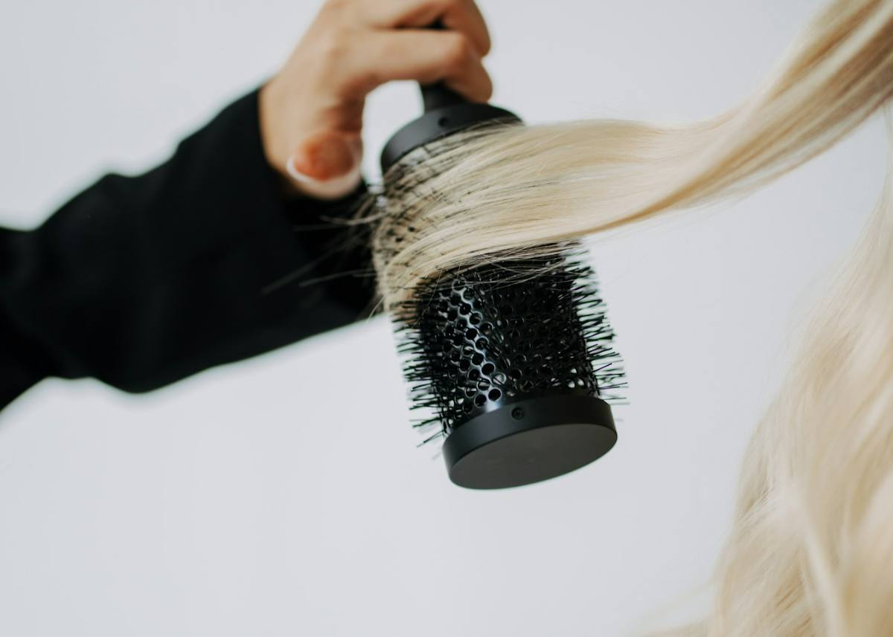
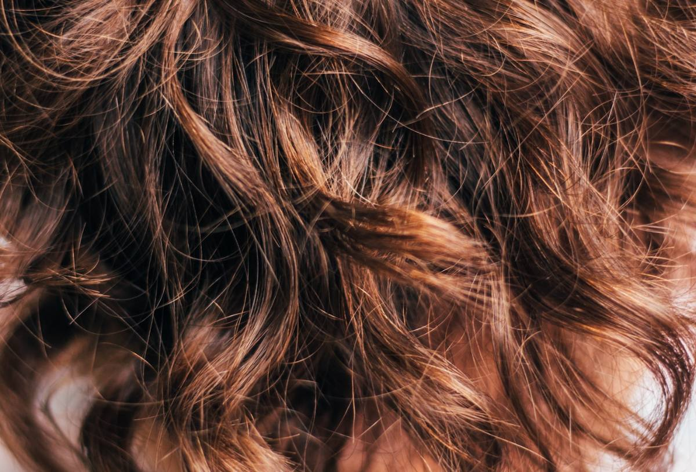
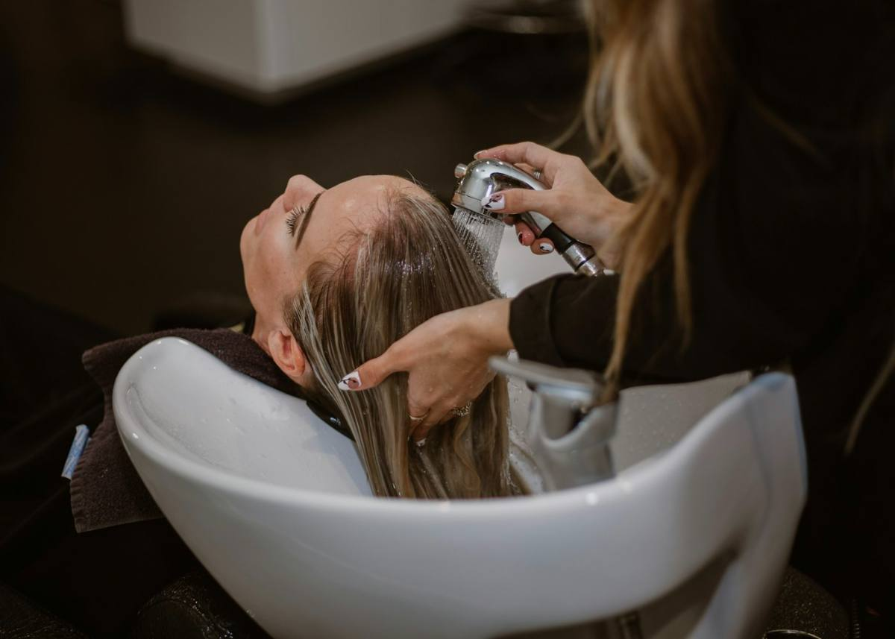

Спасу ваши волосы
Когда испортили и не знаете, что делать. Разбираем, что произошло, и составляем план. Начинается с бесплатной диагностики.
от 5 000 ₽ диагностика бесплатно
Восстановление и уход за волосами · Санкт-Петербург и Ленинградская область
Кератиновое выпрямление, ботокс, восстановление после осветления и уход. Сначала смотрю, что происходит с вашими волосами и кожей головы, потом говорю, какая процедура нужна — и нужна ли вообще. Диагностика бесплатная: пришлите фото, и до всякой записи узнаете, что с волосами и сколько это будет стоить.
Почему наугад не работает
Поэтому «сделайте мне кератин» — это ещё не задача. Задача выясняется до того, как я беру состав в руки.

Маска с кератином каждую неделю — и волосы стали жёсткими и ломкими. Белка им уже хватает, не хватает жиров. Отличить помогает простой тест: как влажная прядь тянется и возвращается.
Подобрать по состояниюУ корней жирнится за сутки, а концы сухие. Это две разные задачи на одной голове, и шампунь «для всех типов» не решает ни одну.
Посмотреть услугиИногда честный ответ — «сейчас это вам не поможет». Скажу об этом до записи.
Когда я откажуМетод Hair ID
Так проходит любая работа — от разовой укладки до курса восстановления.
Смотрю пористость, плотность, состояние кутикулы и кожи головы. Спрашиваю, что делали с волосами за последний год.
Бесплатно — в студии или по фото
Прислать фотоПроцедуру и состав подбираю под ваши волосы. Называю цену, время и срок, сколько это продержится именно у вас.
Цена финальная — доплат на месте нет
Услуги и ценыОбычный шампунь с сульфатами смывает кератин за месяц. Подбираю средства под ваши волосы и записываю в карту.
Карта волос — заберёте с собой
Средства для домаПодбор
Выберите то, что ближе к вашей ситуации — объясню, что с этим делают и в каком порядке.
Услуги и цены
Цена зависит от длины и густоты. В карточках — от какой суммы начинается. Точную назову после диагностики, до записи, и на месте она не изменится.

Когда испортили и не знаете, что делать. Разбираем, что произошло, и составляем план. Начинается с бесплатной диагностики.
от 5 000 ₽ диагностика бесплатно

Восстановление без нагрева и утюжка. Для тонких, пористых и повреждённых волос, и для тех, кому горячие процедуры нельзя.
от 3 000 ₽ эффект около месяца

Курс процедур с контролем между визитами. Одна процедура здесь не решает — важно, чтобы между ними волосы не разрушались заново.
от 3 500 ₽ за процедуру курса

Гладкость на 3–6 месяцев. Работаю составами без формальдегида и не чаще трёх раз в год на одних волосах. Состав подбираю под структуру: тонким мягкий, плотным сильный.
от 3 200 ₽ 2,5–4 часа
Ботулотоксина в составе нет, уколов тоже — это только название. Не выпрямляет. Заполняет повреждения и возвращает плотность. Держится 1,5–3 месяца.
от 3 000 ₽ 2–3 часа
Мягкость и блеск, видно после первой процедуры. Держится две-три недели и накапливается от визита к визиту. Структуру не чинит: для этого есть восстановление.
от 1 800 ₽
Шесть шагов: очищение кожи головы, массаж, питание длины. Полтора часа. Берут, когда волосы в целом живые, но выглядят уставшими. При сильных повреждениях сначала восстановление, потом СПА.
от 2 000 ₽
Когда корни жирнятся за день, а уход будто не работает. Пилинг снимает плёнку из себума и силиконов, после него средства начинают действовать. При ранках и раздражении не делаю — сначала к врачу.
от 1 200 ₽
Японский уход, сильный видимый эффект за визит.
от 2 500 ₽
Перемены без риска: отрастает красиво, убирается за ухо. Форму подбираю под лицо.
от 800 ₽
Свадьба, выпускной, съёмка. Держится весь день. Можно сделать пробную заранее.
от 2 500 ₽ выезд возможен
Разбор внешности целиком: стрижка, цвет, одежда. Ничего не режем, пока вы не уверены.
от 4 000 ₽
Состав входит в стоимость. Сумму называю до записи, на месте она не меняется. Если по диагностике процедура вам не подходит — скажу об этом и не возьму денег.
Узнать точную ценуРаботы
Пары «до и после» снимаю сама: один свет, один ракурс, без обработки. Иначе сравнивать бессмысленно.
Сейчас здесь показано, как будет устроена галерея. Свои снимки поставлю после первых съёмок — с письменного согласия клиенток.


Честно
Надпись «без формальдегида» на этикетке — ещё не гарантия. Метиленгликоль и метандиол превращаются в формальдегид при нагреве утюжком. Поэтому важны состав, проветривание и частота: не чаще трёх раз в год.
Вопросы о кератинеЕго нельзя «вылечить»: живая часть только в фолликуле под кожей. Уход улучшает внешнее состояние и поведение волоса. Это честная формулировка, и она отличается от «восстановим изнутри».
Что реально помогаетСредства склеивают его на два-три мытья, потом он расслаивается дальше по длине. Единственное рабочее решение — состричь.
Спросить про свои концыОсветление делают до кератина, а красить после него можно не раньше чем через пять недель. Поэтому я спрашиваю про планы на цвет заранее.
Кератин или ботоксВ этих случаях процедура навредит или не даст результата:
Я мастер, а не врач: диагнозы не ставлю и лечение не назначаю. Когда вижу медицинский вопрос — говорю прямо.
Спросить про свой случайСравнение
Их постоянно путают, а задачи у них разные. Если коротко: кератин — чтобы волосы лежали, ботокс — чтобы выглядели живыми.
Таблица шире экрана — листайте вбок →
| Что сравниваем | Кератиновое выпрямление | Ботокс для волос | Холодное восстановление |
|---|---|---|---|
| Задача | Убрать пушистость, выпрямить | Вернуть плотность и блеск | Восстановить пористую длину |
| Выпрямляет | Да | Нет | Нет, локон останется локоном |
| Сколько держится | 3–6 месяцев | 1,5–3 месяца | Около месяца, накопительно |
| Нагрев утюжком | Да, обязателен | Чаще да | Нет |
| Кому подходит | Вьющиеся, пушистые, непослушные | Пористые после осветления, тонкие | Тем, кому нагрев противопоказан |
| Беременным | Нет | По согласованию с врачом | По согласованию с врачом |
| Сколько занимает | 2,5–4 часа | 2–3 часа | 1–1,5 часа |
| Когда можно красить | Не раньше чем через 5 недель | Через 2 недели | Не мешает окрашиванию |
Ботулотоксина в «ботоксе для волос» нет, уколов не будет — это только название процедуры. Если сомневаетесь, что выбрать, пришлите фото: по состоянию волос видно, какая из трёх процедур даст результат, а какая будет тратой денег.
После процедуры
Сколько продержится эффект, решают первые дни дома.
Полный список отдаю на руки после визита — запоминать не нужно.
Бессульфатный шампунь
Как проходит визит
Отзывы
Отзывов пока нет — и придумывать я их не стану
Студия открылась недавно. Как только клиентки напишут первые отзывы на Авито и в Яндекс Картах, они появятся здесь — с именами и фотографиями работ.
Пока предлагаю проверить меня иначе: пришлите фото волос и посмотрите, как я отвечу. Разбор бесплатный и ни к чему не обязывает — по нему видно, разбирается человек в волосах или продаёт процедуру.
Прислать фото на разбор
О мастере
Ирина Давыдова — мастер и владелица студии Hair ID
Я Ирина, парикмахер-стилист в индустрии красоты. Моё призвание — создавать образы, в которых каждая женщина чувствует себя уверенно, стильно и гармонично.
Я уделяю особое внимание качеству волос, подбирая уход и стрижки, которые подчёркивают индивидуальность. Лёгкий экспресс-образ за час, стильные вечерние укладки и макияж — всё это поможет вам выглядеть безупречно в любой ситуации. Учитывая ваши пожелания, я помогу создать образ, который не только дополнит вашу внешность, но и подарит отличное настроение.
Средства почти всегда нормальные. Беда в том, что их подобрали не тем волосам.
Поэтому я не начинаю разговор с прайса. Сначала смотрю, что происходит с вашими волосами и кожей головы, и только потом говорю, что можно сделать. Иногда честный ответ — «сейчас процедура не нужна, давайте уберём причину».
Вредят неподходящий состав, нарушенная технология и слишком частое повторение. Я работаю составами без формальдегида, делаю не чаще трёх раз в год на одних волосах и проветриваю кабинет. Ломкость, которую приписывают кератину, обычно остаётся от осветления до него.
Кератин выпрямляет и убирает пушистость — «чтобы лежали». Ботокс не выпрямляет, он заполняет повреждения и возвращает плотность — «чтобы выглядели живыми». Ботулотоксина в нём нет, это только название процедуры.
Кератин — 3–6 месяцев, ботокс — 1,5–3 месяца, холодное восстановление — около месяца с накопительным эффектом, «Счастье для волос» — около месяца и работает курсом. Срок сокращает одно: обычный шампунь с сульфатами сразу после процедуры.
Сначала пришлите фото волос при дневном свете — бесплатно скажу, что подойдёт и сколько будет стоить. Поедете, только если решение вас устроит. Ко мне приезжают из Токсово, Лесколово, Кузьмоловского, Сертолово, Девяткино и Мурино — дорога от 9 до 30 минут.
Горячий кератин — нет. Холодное восстановление, уход, питание и увлажнение — можно, но только после разговора с вашим врачом. Обязательно скажите мне о беременности до записи: от этого зависит выбор состава.
Первые дни после кератина — не собирать волосы в тугой хвост, не закалывать, мыть только бессульфатным шампунем. Окрашивание — не раньше чем через пять недель. Полный список выдаю на руки после визита.
Поезжайте, если вам там хорошо. Разница вот в чём. В салоне на вас обычно час записи и мастер, который сегодня делает восьмую голову. У меня одна клиентка в день и полтора-четыре часа только на вас, диагностика до записи бесплатная, а цена названа заранее и на месте не растёт. Дорога от Девяткино — 24 минуты, от Токсово — 15. Если ехать далеко и незачем, я так и скажу на разборе фото.
Иногда это и есть правильный ответ — например, когда волосам не хватает только питания. Тогда я подберу средство и не позову на процедуру. Домашние наборы для кератина — другое дело: состав там слабее, а утюжок без опыта чаще ломает волосы, чем выпрямляет. Что именно нужно вашим волосам, видно по фото, и это бесплатно.
Наличными или переводом. Чек выдаю через приложение «Мой налог».
Как добраться
Перекрёсток дорог 41К-012 и 41К-071. Бесплатная парковка у студии.
ЗаписатьсяДо станции Осельки — 24 минуты от Девяткино, есть прямые от Финляндского вокзала. Билет около 70 ₽ — расписание и цену проверьте перед выездом.
Подобрать время под электричкуМаршрут 619 от метро Девяткино — каждые 20 минут,
примерно с 07:20 до 22:30, расписание проверьте перед выездом.
Маршрут 675Г от метро Проспект Просвещения.
Всеволожский район: Нижние и Верхние Осельки, Осельки, Лесколово, Скотное, Рапполово, Касимово, Пери, Кавголово, Хиттолово, Токсово, Новое Токсово, Куйвози, Гарболово, Матокса, Вартемяги, Агалатово, Кузьмоловский, Юкки, Сертолово, Новое Девяткино, Мурино, Бугры, Всеволожск.
Санкт-Петербург: Парголово, Шувалово, Озерки, Парнас, проспект Просвещения, Гражданский проспект, Академическая, Политехническая, Калининский, Выборгский и Приморский районы. От метро Девяткино — прямой автобус.
Ленинградская область: Приозерское направление, Сосново, Рощино, Первомайское, Токсово-Кавголовское плато. Из дальних районов визит удобно совмещать с поездкой в город — подберу время под ваш маршрут.
Студия: д. Нижние Осельки, Всеволожский район, Ленинградская область. Точный адрес присылаю после записи.
Узнать адрес при записиЗапись
Выберите услугу и удобное время — соберу сообщение, вам останется отправить его в мессенджер. Отвечаю в течение часа.
В день принимаю одну клиентку: процедуры идут от полутора до четырёх часов. Поэтому ближайшие даты разбирают за несколько дней вперёд.